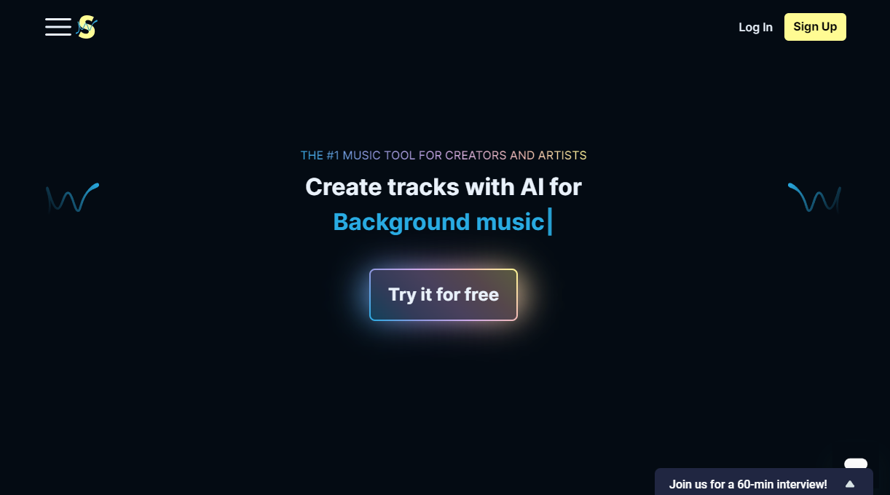
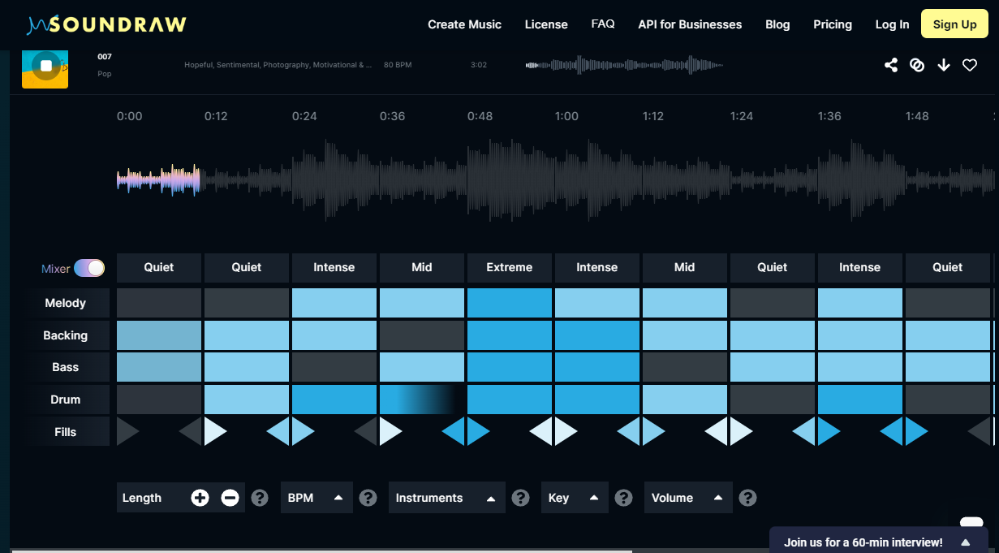

|  |
Soundraw è un software musicale basato su intelligenza artificiale e si occupa della generazione di musica di sottofondo per utilizzi variegati, dalla trasmissione di programmi ad una semplice colonna sonora di un edificio. Questa tecnologia all’avanguardia permette la creazione di tracce musicali uniche e senza diritti d'autore attraverso la selezione di semplici caratteristiche che descrivono la musica perfetta per il proprio progetto. Ogni traccia può essere adattata alle esigenze specifiche e, dopo averla individuata, sarà possibile scaricare le tracce per uso commerciale. Le tracce saranno di proprietà dell’utente e sarà possibile condividere le creazioni musicali, salvare i progressi e scaricare le tracce finalizzate per l’uso immediato. Soundraw, quindi, non è solo un generatore di musica, bensì uno strumento creativo che offre libertà di personalizzazione e risparmio di tempo per concentrarsi sulla creazione di contenuti unici. |
|  |